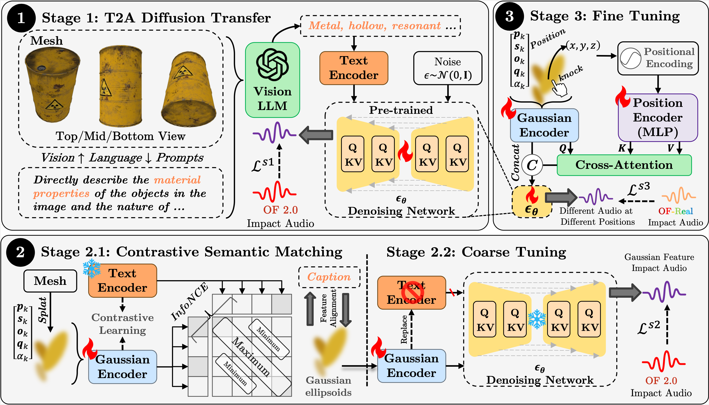

Experience SonicGauss position-aware audio synthesis. Click on white spheres to hear generated impact sounds.
While 3D Gaussian representations (3DGS) have proven effective for modeling the geometry and appearance of objects, their potential for capturing other physical attributes—such as sound—remains largely unexplored.
In this paper, we present a novel framework dubbed SonicGauss for synthesizing impact sounds from 3DGS representations by leveraging their inherent geometric and material properties. Specifically, we integrate a diffusion-based sound synthesis model with a PointTransformer-based feature extractor to infer material characteristics and spatial-acoustic correlations directly from Gaussian ellipsoids. Our approach supports spatially varying sound responses conditioned on impact locations and generalizes across a wide range of object categories.
Experiments on the ObjectFolder dataset and real-world recordings demonstrate that our method produces realistic, position-aware auditory feedback. The results highlight the framework's robustness and generalization ability, offering a promising step toward bridging 3D visual representations and interactive sound synthesis.
Overview of our SonicGauss framework with its three-stage approach:

@misc{wang2025sonicgauss,
title={SonicGauss: Position-Aware Physical Sound Synthesis for 3D Gaussian Representations},
author={Chunshi Wang and Hongxing Li and Yawei Luo},
year={2025},
eprint={2507.19835},
archivePrefix={arXiv},
primaryClass={cs.SD}
}